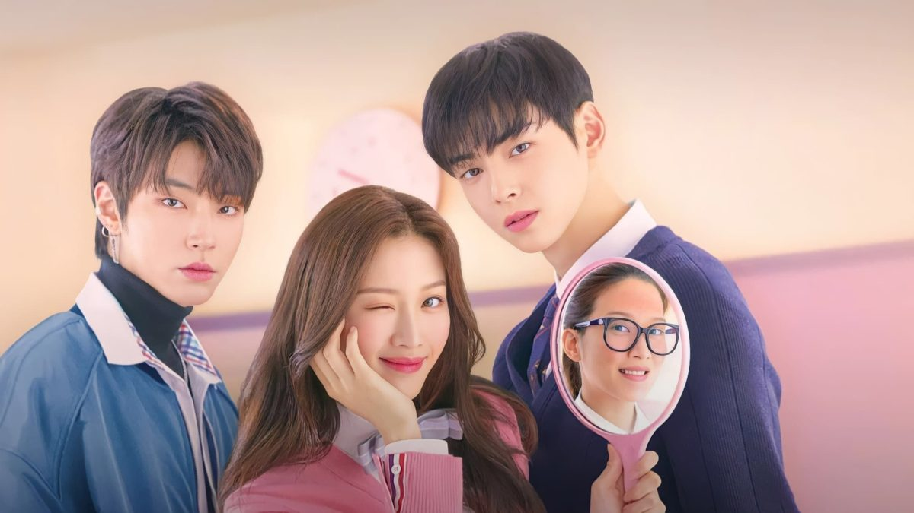
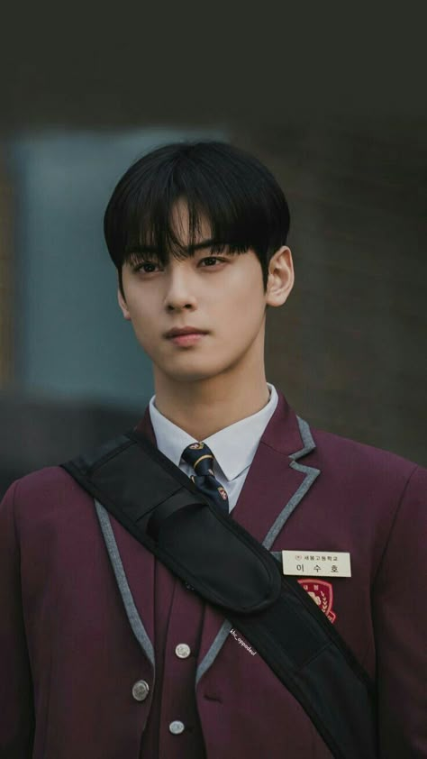

sobre:
Conheça a famosa serie : BELEZA VERDADEIRA
Protagonistas:
lim joo-kyung
.jpg)
No dorama, Lim Joo-kyung é uma estudante do ensino médio que sofre de inseguranças com sua aparência e é constantemente intimidada por não se encaixar nos padrões de beleza. Ela descobre o mundo da maquiagem através de tutoriais online e se torna especialista em transformar seu visual, conseguindo esconder seu rosto sem maquiagem, e se tornando muito popular na escola.
Lee Su-ho
No dorama, Lee Suho é um estudante popular, conhecido por sua aparência impressionante e notas excelentes, mas que mantém uma personalidade fria e distante devido a traumas passados. O personagem de Lee Suho é extremamente popular entre os fãs do dorama, gerando debates fervorosos sobre o triângulo amoroso principal da história.
Han Seo-jun
.jpg)
Um estudante carismático e rebelde que se apaixona pela protagonista, Lim Ju-kyung. Apesar de sua fachada durona,ele é extremamente leal e carinhoso com aqueles que ama,especialmente sua família (sua mãe e irmã mais nova) e seus amigos próximos.